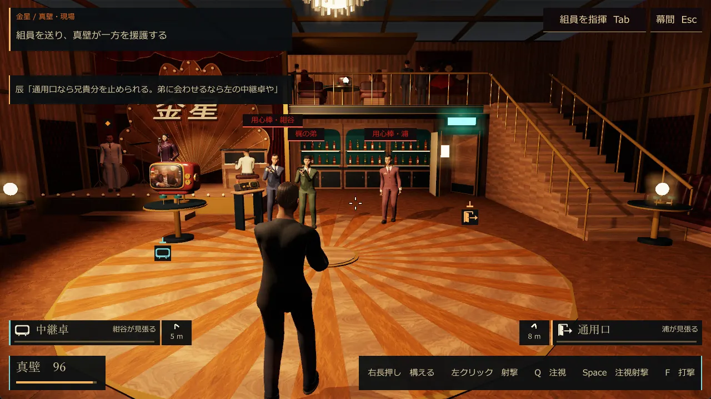

制作記録 · v1.9.0
金星の一夜
失敗作 · 開発終了
作者評価：遊びの面白さと、レトロフューチャーな店の内装・照明が、狙いに届きませんでした。v1.9.0を最終版として残し、開発を終了します。

最終版をダウンロード
Windows x64 · v1.9.0 · ZIP 約145 MB
145,137,866 bytes
ZIPをすべて展開し、Kinsei.exeを起動してください。タイトルでEnterを押すと始まります。
金星の夜を、どう終えるか。
2026年、大阪・宵待町。若頭の真壁は六人の組員とキャバレー金星へ戻ります。兄貴分を追うか、梶に弟の無事を知らせるか。真壁を動かし、組員に仕事を任せながら、一夜の決着を選ぶゲームです。
基本の操作
- 移動・見回す
- WASD・マウス
- 構える・撃つ
- 右ボタン長押し・左クリック
- 現場と指揮を切り替える
- Tab
- 組員を選ぶ・移動を指示
- 顔札をクリック・地面を右クリック
- 幕間・設定
- Esc